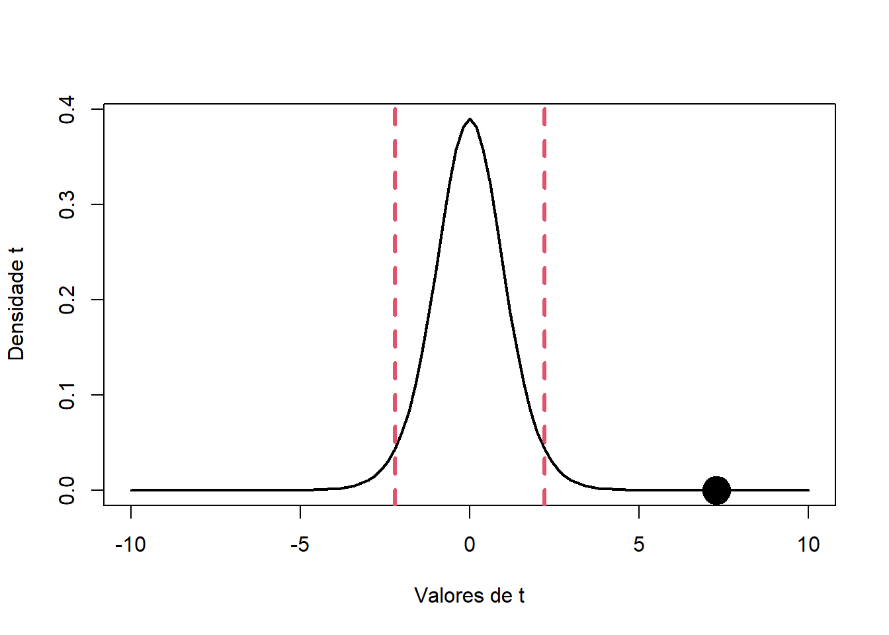

Chapter3 Correlação Linear
- Covariância
cov(peso, altura)## [1] 1.020833- Correlação Linear de Pearson (\(r\))
cor(peso, altura)## [1] 0.9101177- Coeficiente de Determinação (\(R^2\) %)
100*cor(peso, altura)^2## [1] 82.83142- Teste t para a correlação linear
cor.test(peso, altura)##
## Pearson's product-moment correlation
##
## data: peso and altura
## t = 7.285, df = 11, p-value = 1.573e-05
## alternative hypothesis: true correlation is not equal to 0
## 95 percent confidence interval:
## 0.7203704 0.9731205
## sample estimates:
## cor
## 0.9101177- Entendendo o teste
t_cal <- 7.285 # t calculado
n_df <- 11 # número de graus de liberdade
t_crit_1 <- qt(0.025, df = 11)
t_crit_2 <- qt(0.975, df = 11)
# gráfico da distribuição de teste
curve( dt(x, df = n_df), -10, 10, lwd = 2,
ylab = "Densidade t", xlab = "Valores de t" )
abline( v = t_crit_1, lty = 2, col = 2, lwd = 3)
abline( v = t_crit_2, lty = 2, col = 2, lwd = 3)
points(t_cal, 0 , pch = 19, cex = 3)